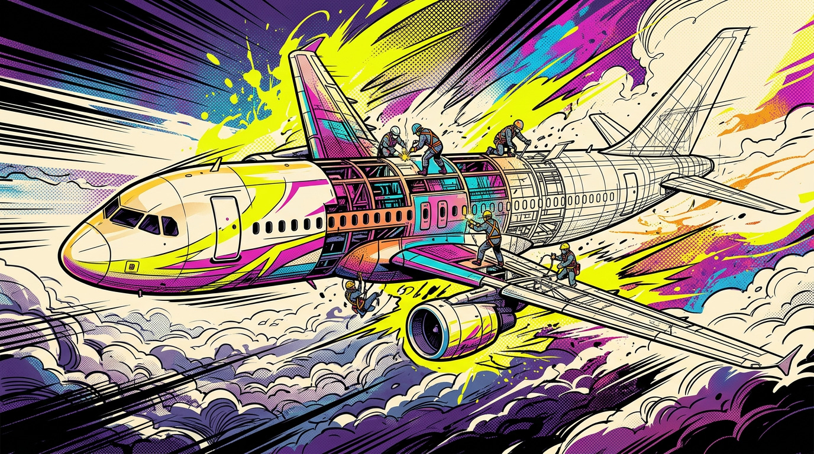
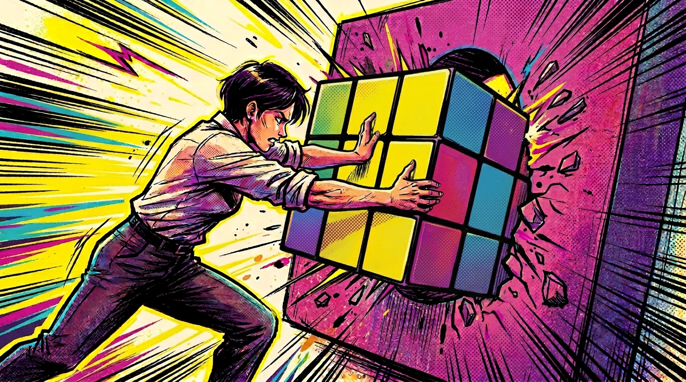
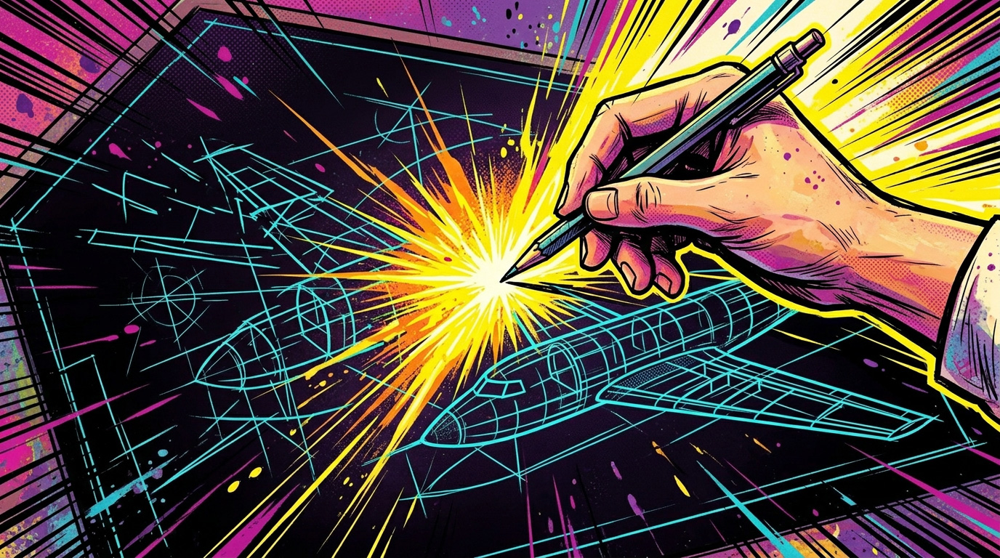
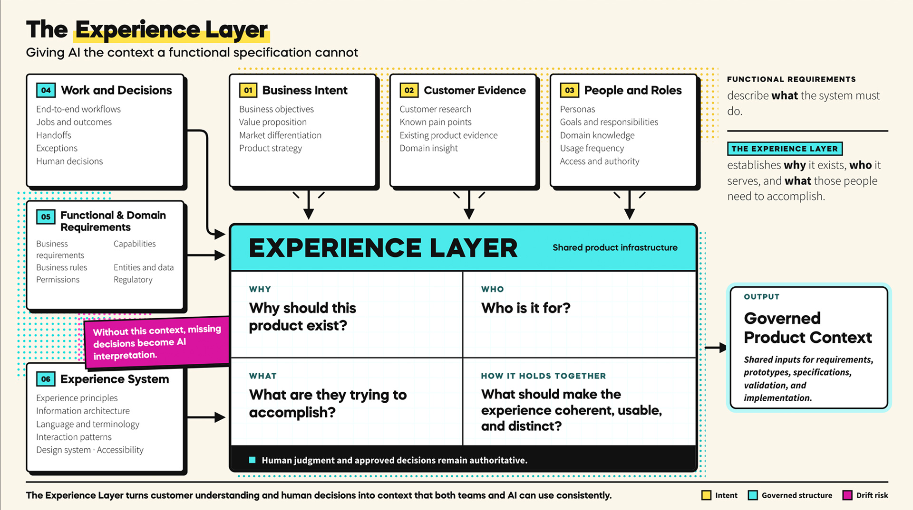
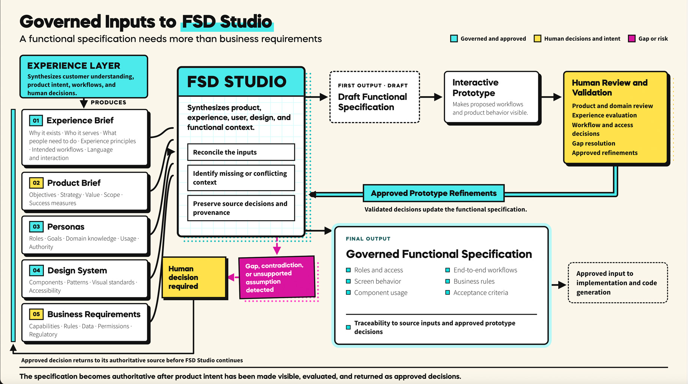
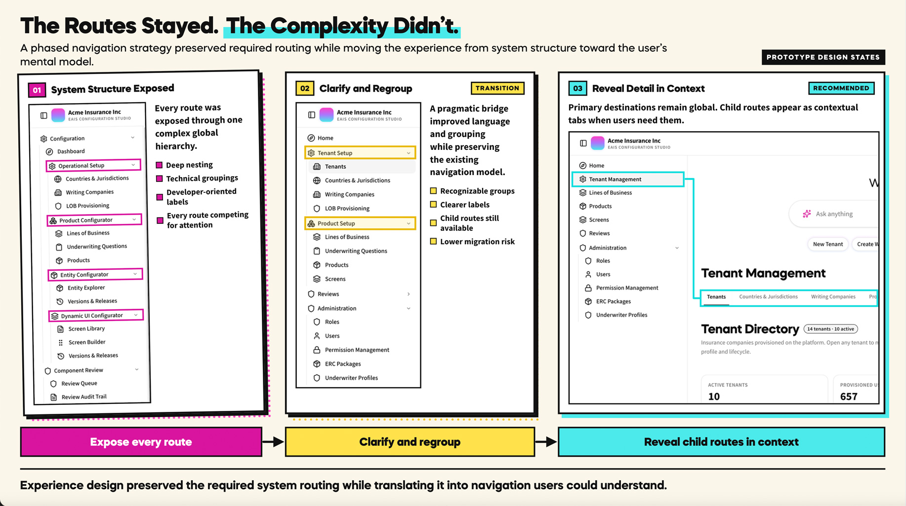

Giving an AI-first insurance platform a shared product direction.
Established shared product and experience foundations across five delivery pods, giving teams and AI a common reference for what to build.
At a Glance
Project Overview
- Client: Insurity, through Artizent (formerly Nous)
- Domain: Enterprise property and casualty insurance technology
- Delivery context: Two applications, 53 capabilities, and approximately 60 contributors across the broader delivery environment
- Status: Platform in active development
Leadership & Influence
- Expanded and led a team of five UX designers and four UI developers, organizing the team around a more efficient delivery process and retaining final design approval responsibility.
- Provided cross-functional leadership across product, engineering, QA, and delivery, aligning product and insurance-domain decisions around shared customer goals and workflows. Influenced product direction, staffing, roadmap decisions, and client alignment.
- Established foundations for accountable review and preservation of product decisions while delivery continued.
Challenge
Development was underway before customer understanding, product strategy, and end-to-end workflows had converged. The program could generate functional output, but lacked a shared basis for deciding whether it was the right product.
- Missing decisions became generated behavior. AI filled gaps that needed customer context and accountable human judgment.
- Teams could build different interpretations. The same requirements did not guarantee shared workflows, language, or experience.
- Corrections consumed the apparent time savings. Accepted decisions could be lost between specifications, prototypes, and implementation.
The challenge was to establish shared product direction and decision accountability while delivery kept moving.
Objectives
Insurity’s vision was to put insurance-product creation in the hands of the domain experts responsible for those products—enabling them to configure and launch offerings without relying on IT to translate every decision into the system.
- Turn the vision into shared product direction. Align product, domain, experience, and engineering leaders around what to build and which decisions needed resolution.
- Create one product from fragmented capabilities. Align teams and applications around a coherent customer proposition.
- Turn AI speed into dependable progress. Preserve decisions and control rework as delivery scales.
- Build a capability the organization can sustain. Establish shared practices, accountability, and reusable foundations for ongoing client ownership.

Unfinished foundation. Delivery was underway before product direction and customer understanding had converged.

Output without dependable progress. Correcting generated behavior consumed the apparent time savings.

Shared direction and accountability. Teams needed a common product foundation and clear ownership of unresolved decisions.
Approach
- Formalize how teams turn requirements into product decisions. Established a shared sequence: collect business requirements, generate a functional specification, prototype, review and refine with Product, update the specification, and use it for AI-assisted code generation. The prototype provides a human validation surface; the updated functional specification becomes the authoritative input for implementation. I documented the process for client stakeholder review and feedback.
- Put the workflow into practice through FSD Studio. Helped conceive, architect, build, and operationalize the tool, connecting AI-assisted specification generation with software validation, decision tracking, and human review.
- Keep executive oversight connected to product decisions. Documented key decisions and reviewed progress in weekly executive meetings, making refinements and scope changes visible as stakeholders assessed whether the work remained on track.
- Make approved direction usable by teams and AI. Documented product context, specifications, prototypes, and design-system foundations as shared delivery inputs, giving subsequent work a reference grounded in reviewed product decisions.

A shared product foundation. Documented customer context and experience standards gave teams a common reference.

A repeatable decision process. Human prototype review and updated specifications carried approved product decisions into AI-assisted implementation.

A practical response to parallel development. The hybrid navigation regrouped technical capabilities around recognizable user tasks.
Progress and foundations established
Shared product and experience foundations are in use across five delivery pods. The operating model was formally adopted and is in use in participating pods. Consistent adoption of the complete process across the broader development organization remains uneven.
- Approximately 40 governed specifications put the foundations to work. Shared customer context and experience standards became inputs to specifications across the delivery effort.
- Product decisions documented for repeatable AI-assisted delivery. Approved direction, prototype refinements, and reusable patterns became shared inputs, reducing what teams and AI were left to interpret independently.
- A reusable framework delivered for ongoing client use. My team documented product context, patterns, decisions, and working practices for Insurity to maintain and extend.
The platform is in active development. Shared foundations provide a basis for broader process adoption and the next stage: enabling domain experts to create insurance products and equipping Insurity to maintain and extend the framework. Customer and business outcomes will need to be evaluated as the platform moves into use.